Управление ветеринарии
Акмолинской области
RU
Русский
Казак
Об управлении
Деятельность
Документы
Пресс-центр
Контакты
Онлайн-приемная
Управление ветеринарии Акмолинской области
/ Деятельность
Направления деятельности
Ветеринарная безопасность

Идентификация сельскохозяйственных животных
Антикоррупционная политика РК
Государственные услуги
Основные документы
Положение
Планы и отчеты
Советы и комиссии
График приема граждан
Меморандумы
Положение о государственном учреждении «Управление ветеринарии Акмолинской области»
13 июня 2016
План мероприятий по повышению качества оказания государственных услуг на 2021 год
23 июня 2021
Об итогах работы Управления ветеринарии Акмолинской области за 2019 год
13 января 2020
О ветеринарно-санитарной безопасности за 9 месяцев 2019 года
01 октября 2019
Информация о ветеринарно-санитарной безопасности на территории Акмолинской области за 1 полугодие 2019 года
01 июля 2019
Совет наставников
20 февраля 2020
Комиссия по замене и уничтожению Государственного Флага, Государственного Герба Республики Казахстан
21 июня 2019
График приема граждан
28 апреля 2020
Меморандум о сотрудничестве по осуществлению отбора проб на объектах внутренней торговли
04 ноября 2015
Отраслевые документы
Документы
Постановления
Проекты
Регламенты
О внесении изменений и дополнений в решение Акмолинского областного маслихата от 30 сентября 2015 года № 5С-41-8 "Об утверждении Правил содержания и выгула собак и кошек, отлова и уничтожения бродячих собак и кошек в городах и других населенных пунктах Акмолинской области"
12 декабря 2016
Об утверждении Правил содержания животных в Акмолинской области
30 сентября 2015
Об утверждении Правил содержания и выгула собак и кошек, отлова и уничтожения бродячих собак и кошек в городах и других населенных пунктах Акмолинской области
30 сентября 2015
О признании утратившими силу некоторых постановлений акимата Акмолинской области
25 февраля 2020
О внесении изменений в постановление акимата Акмолинской области от 2 ноября 2015 года № А-11/501 "Об утверждении регламентов государственных услуг в сфере ветеринарии"
23 апреля 2019
Проект постановления акимата Акмолинской области "О признании утратившими силу некоторых постановлений акимата Акмолинской области"
10 марта 2020
О признании утратившими силу некоторых постановлений акимата Акмолинской области
25 февраля 2020
О внесении изменений в постановление акимата Акмолинской области от 2 ноября 2015 года № А-11/501 "Об утверждении регламентов государственных услуг в сфере ветеринарии"
23 апреля 2019
О внесении изменений в постановление акимата Акмолинской области от 2 ноября 2015 года № А-11/501 "Об утверждении регламентов государственных услуг в сфере ветеринарии"
20 сентября 2017
Бюджет
Бюджет на стадии исполнения
Гражданский бюджет
Бюджетные программы
Об утверждении бюджетных программ на 2019-2021 годы
20 декабря 2018
Бюджетные программы на 2022 - 2024 годы
05 апреля 2022
Проверка ревизионной комиссии
28 февраля 2022
Отчет о реализации бюджетных программ 2021
18 февраля 2022
Бюджетные программы 2023-2025 г
25 апреля 2023
Бюджетные программы 2022-2024 годы
02 февраля 2023
Реализуемые проекты
Строительство скотомогильников на территории Акмолинской области

{kind=link}